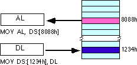

|
Table of Content | Chapter Four (Part 3) |
|
Table of Content | Chapter Four (Part 3) |
Like the x86 processors described in the previous chapter, the 80x86 processors let you access memory in many different ways. The 80x86 memory addressing modes provide flexible access to memory, allowing you to easily access variables, arrays, records, pointers, and other complex data types. Mastery of the 80x86 addressing modes is the first step towards mastering 80x86 assembly language.
When Intel designed the original 8086 processor, they provided it with a flexible, though limited, set of memory addressing modes. Intel added several new addressing modes when it introduced the 80386 microprocessor. Note that the 80386 retained all the modes of the previous processors; the new modes are just an added bonus. If you need to write code that works on 80286 and earlier processors, you will not be able to take advantage of these new modes. However, if you intend to run your code on 80386sx or higher processors, you can use these new modes. Since many programmers still need to write programs that run on 80286 and earlier machines, it's important to separate the discussion of these two sets of addressing modes to avoid confusing them.
4.6.1 8086 Register Addressing Modes
Most 8086 instructions can operate on the 8086's general
purpose register set. By specifying the name of the register as an operand to the
instruction, you may access the contents of that register. Consider the 8086 mov
(move) instruction:
mov destination, source
This instruction copies the data from the source operand to
the destination operand. The eight and 16 bit registers are certainly valid operands for
this instruction. The only restriction is that both operands must be the same size. Now
let's look at some actual 8086 mov instructions:
mov ax, bx ;Copies the value from BX into AX
mov dl, al ;Copies the value from AL into DL
mov si, dx ;Copies the value from DX into SI
mov sp, bp ;Copies the value from BP into SP
mov dh, cl ;Copies the value from CL into DH
mov ax, ax ;Yes, this is legal!
Remember, the registers are the best place to keep often used variables. As you'll see a little later, instructions using the registers are shorter and faster than those that access memory. Throughout this chapter you'll see the abbreviated operands reg and r/m (register/memory) used wherever you may use one of the 8086's general purpose registers.
In addition to the general purpose registers, many 8086
instructions (including the mov instruction) allow you to specify one of the
segment registers as an operand. There are two restrictions on the use of the segment
registers with the mov instruction. First of all, you may not specify cs
as the destination operand, second, only one of the operands can be a segment register.
You cannot move data from one segment register to another with a single mov
instruction. To copy the value of cs to ds, you'd have to use
some sequence like:
mov ax, cs
mov ds, ax
You should never use the segment registers as data registers to hold arbitrary values. They should only contain segment addresses. But more on that, later. Throughout this text you'll see the abbreviated operand sreg used wherever segment register operands are allowed (or required).
4.6.2 8086 Memory Addressing Modes
The 8086 provides 17 different ways to access memory. This may seem like quite a bit at first, but fortunately most of the address modes are simple variants of one another so they're very easy to learn. And learn them you should! The key to good assembly language programming is the proper use of memory addressing modes.
The addressing modes provided by the 8086 family include displacement-only, base, displacement plus base, base plus indexed, and displacement plus base plus indexed. Variations on these five forms provide the 17 different addressing modes on the 8086. See, from 17 down to five. It's not so bad after all!
4.6.2.1 The Displacement Only Addressing Mode
The most common addressing mode, and the one that's easiest
to understand, is the displacement-only (or direct) addressing mode. The displacement-only
addressing mode consists of a 16 bit constant that specifies the address of the target
location. The instruction mov al,ds:[8088h] loads the al
register with a copy of the byte at memory location 8088h. Likewise, the instruction mov
ds:[1234h],dl stores the value in the dl register to memory location
1234h:

The displacement-only addressing mode is perfect for accessing simple variables. Of course, you'd probably prefer using names like "I" or "J" rather than "DS:[1234h]" or "DS:[8088h]". Well, fear not, you'll soon see it's possible to do just that.
Intel named this the displacement-only addressing mode
because a 16 bit constant (displacement) follows the mov opcode in memory. In
that respect it is quite similar to the direct addressing mode on the x86 processors (see
the previous chapter). There are some minor differences, however. First of all, a
displacement is exactly that- some distance from some other point. On the x86, a direct
address can be thought of as a displacement from address zero. On the 80x86 processors,
this displacement is an offset from the beginning of a segment (the data segment in this
example). Don't worry if this doesn't make a lot of sense right now. You'll get an
opportunity to study segments to your heart's content a little later in this chapter. For
now, you can think of the displacement-only addressing mode as a direct addressing mode.
The examples in this chapter will typically access bytes in memory. Don't forget, however,
that you can also access words on the 8086 processors:
By default, all displacement-only values provide offsets
into the data segment. If you want to provide an offset into a different segment, you must
use a segment override prefix before your address. For example, to access location 1234h
in the extra segment (es) you would use an instruction of the form mov
ax,es:[1234h]. Likewise, to access this location in the code segment you would use
the instruction mov ax, cs:[1234h]. The ds: prefix in the
previous examples is not a segment override. The CPU uses the data segment register by
default. These specific examples require ds: because of MASM's syntactical
limitations.
4.6.2.2 The Register Indirect Addressing Modes
The 80x86 CPUs let you access memory indirectly through a register using the register indirect addressing modes. There are four forms of this addressing mode on the 8086, best demonstrated by the following instructions:
mov al, [bx]
mov al, [bp]
mov al, [si]
mov al, [di]
As with the x86 [bx] addressing mode, these
four addressing modes reference the byte at the offset found in the bx, bp, si,
or di register, respectively. The [bx], [si], and [di] modes
use the ds segment by default. The [bp] addressing mode uses the
stack segment (ss) by default.
You can use the segment override prefix symbols if you wish to access data in different segments. The following instructions demonstrate the use of these overrides:
mov al, cs:[bx]
mov al, ds:[bp]
mov al, ss:[si]
mov al, es:[di]
Intel refers to [bx] and [bp] as
base addressing modes and bx and bp as base registers (in fact, bp
stands for base pointer). Intel refers to the [si] and [di]
addressing modes as indexed addressing modes (si stands for source index, di
stands for destination index). However, these addressing modes are functionally
equivalent. This text will call these forms register indirect modes to be consistent.
Note: the [si] and [di]
addressing modes work exactly the same way, just substitute si and di
for bx above.
4.6.2.3 Indexed Addressing Modes
The indexed addressing modes use the following syntax:
mov al, disp[bx]
mov al, disp[bp]
mov al, disp[si]
mov al, disp[di]
If bx contains 1000h, then the instruction
mov cl,20h[bx] will load cl from memory location ds:1020h. Likewise,
if bp contains 2020h, mov dh,1000h[bp] will load dh
from location ss:3020.
The offsets generated by these addressing modes are the sum
of the constant and the specified register. The addressing modes involving bx, si,
and di all use the data segment, the disp[bp] addressing mode
uses the stack segment by default. As with the register indirect addressing modes, you can
use the segment override prefixes to specify a different segment:
mov al, ss:disp[bx]
mov al, es:disp[bp]
mov al, cs:disp[si]
mov al, ss:disp[di]
You may substitute si or di in
the figure above to obtain the [si+disp] and [di+disp]
addressing modes.
Note that Intel still refers to these addressing modes as based addressing and indexed addressing. Intel's literature does not differentiate between these modes with or without the constant. If you look at how the hardware works, this is a reasonable definition. From the programmer's point of view, however, these addressing modes are useful for entirely different things. Which is why this text uses different terms to describe them. Unfortunately, there is very little consensus on the use of these terms in the 80x86 world.
4.6.2.4 Based Indexed Addressing Modes
The based indexed addressing modes are simply combinations
of the register indirect addressing modes. These addressing modes form the offset by
adding together a base register (bx or bp) and an index register
(si or di). The allowable forms for these addressing modes are
mov al, [bx][si]
mov al, [bx][di]
mov al, [bp][si]
mov al, [bp][di]
Suppose that bx contains 1000h and si
contains 880h. Then the instruction
mov al,[bx][si]would load al from location DS:1880h.
Likewise, if bp contains 1598h and di contains 1004, mov
ax,[bp+di] will load the 16 bits in ax from locations SS:259C and
SS:259D.
The addressing modes that do not involve bp
use the data segment by default. Those that have bp as an operand use the
stack segment by default.
You substitute di in the figure above to
obtain the [bx+di] addressing mode.
You substitute di in the figure above for the
[bp+di] addressing mode.
4.6.2.5 Based Indexed Plus Displacement Addressing Mode
These addressing modes are a slight modification of the base/indexed addressing modes with the addition of an eight bit or sixteen bit constant. The following are some examples of these addressing modes:
mov al, disp[bx][si]
mov al, disp[bx+di]
mov al, [bp+si+disp]
mov al, [bp][di][disp]
You may substitute di in the figure above to
produce the [bx+di+disp] addressing mode.
You may substitute di in the figure above to
produce the [bp+di+disp] addressing mode.
Suppose bp contains 1000h, bx
contains 2000h, si contains 120h, and di contains 5. Then mov
al,10h[bx+si] loads al from address DS:2130; mov ch,125h[bp+di]
loads ch from location SS:112A; and mov bx,cs:2[bx][di] loads bx
from location CS:2007.
4.6.2.6 MASM Syntax for 8086 Memory Addressing Modes
Microsoft's assembler uses several different variations to denote indexed, based/indexed, and displacement plus based/indexed addressing modes. You will see all of these forms used interchangeably throughout this text. The following list some of the possible combinations that are legal for the various 80x86 addressing modes:
disp[bx], [bx][disp], [bx+disp], [disp][bx], and [disp+bx]
[bx][si], [bx+si], [si][bx], and [si+bx]
disp[bx][si], disp[bx+si], [disp+bx+si], [disp+bx][si], disp[si][bx], [disp+si][bx], [disp+si+bx], [si+disp+bx], [bx+disp+si], etc.
MASM treats the "[ ]" symbols just like the "+" operator. This operator is commutative, just like the "+" operator. Of course, this discussion applies to all the 8086 addressing modes, not just those involving BX and SI. You may substitute any legal registers in the addressing modes above.
4.6.2.7 An Easy Way to Remember the 8086 Memory Addressing Modes
There are a total of 17 different legal memory addressing modes on the 8086: disp, [bx], [bp], [si], [di], disp[bx], disp[bp], disp[si], disp[di], [bx][si], [bx][di], [bp][si], [bp][di], disp[bx][si], disp [bx][di], disp[bp][si], and disp[bp][di]. You could memorize all these forms so that you know which are valid (and, by omission, which forms are invalid). However, there is an easier way besides memorizing these 17 forms. Consider the chart:
If you choose zero or one items from each of the columns and wind up with at least one item, you've got a valid 8086 memory addressing mode. Some examples:
disp from column one, nothing from
column two, [di] from column 3, you get disp[di]. disp, [bx], and [di]. You
get disp[bx][di]. [si]. You get
[si] [bx], then choose [di].
You get [bx][di]Likewise, if you have an addressing mode that you cannot
construct from this table, then it is not legal. For example, disp[dx][si] is
illegal because you cannot obtain [dx] from any of the columns above.
4.6.2.8 Some Final Comments About 8086 Addressing Modes
The effective address is the final offset produced by an
addressing mode computation. For example, if bx contains 10h, the effective
address for 10h[bx] is 20h. You will see the term effective address in almost
any discussion of the 8086's addressing mode. There is even a special instruction load
effective address (lea) that computes effective addresses.
Not all addressing modes are created equal! Different
addressing modes may take differing amounts of time to compute the effective address. The
exact difference varies from processor to processor. Generally, though, the more complex
an addressing mode is, the longer it takes to compute the effective address. Complexity of
an addressing mode is directly related to the number of terms in the addressing mode. For
example, disp[bx][si] is more complex than [bx]. See the
instruction set reference in the appendices for information regarding the cycle times of
various addressing modes on the different 80x86 processors.
The displacement field in all addressing modes except displacement-only can be a signed eight bit constant or a signed 16 bit constant. If your offset is in the range -128...+127 the instruction will be shorter (and therefore faster) than an instruction with a displacement outside that range. The size of the value in the register does not affect the execution time or size. So if you can arrange to put a large number in the register(s) and use a small displacement, that is preferable over a large constant and small values in the register(s).
If the effective address calculation produces a value
greater than 0FFFFh, the CPU ignores the overflow and the result wraps around back to
zero. For example, if bx contains 10h, then the instruction mov
al,0FFFFh[bx] will load the al register from location ds:0Fh, not from
location ds:1000Fh.
In this discussion you've seen how these addressing modes operate. The preceding discussion didn't explain what you use them for. That will come a little later. As long as you know how each addressing mode performs its effective address calculation, you'll be fine.
|
Table of Content | Chapter Four (Part 3) |
Chapter Four: Memory Layout and
Access (Part 2)
26 SEP 1996